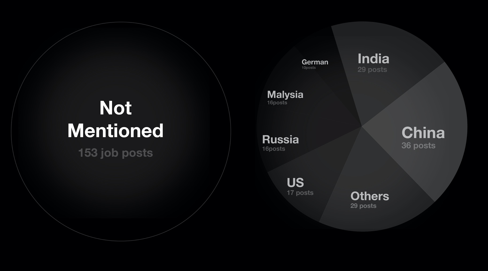
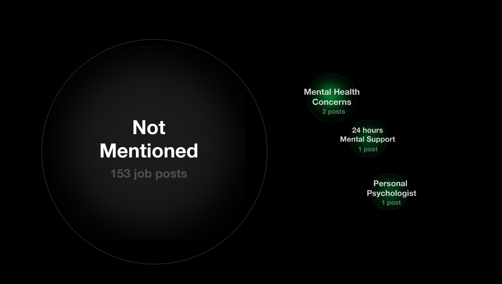
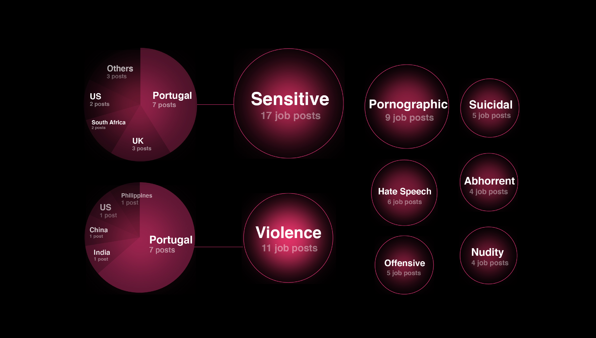
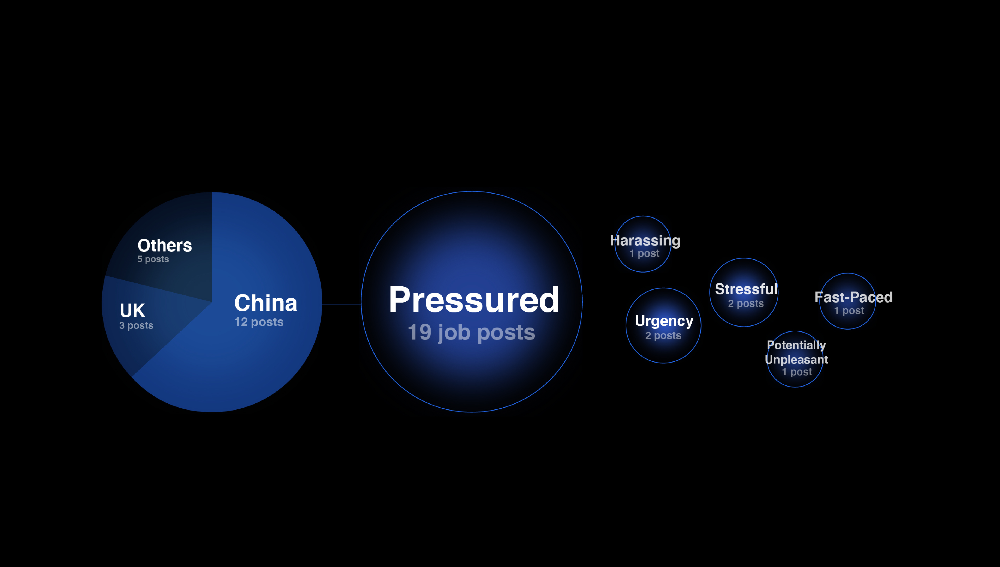

After witnessing thousands of extreme and graphic violent acts, the unsafe work environment led many moderators to the development of PTSD (Post Traumatic Stress Disorder). Some companies have mentioned the high risk of mental illness associated with the job content and the working environment declared in the job descriptions.
The biggest white bubble representing “Not Mentioned” accounts for the largest proportion, indicating that most companies have not stated that the job content will bring mental damage to the moderators in the recruitment information. And this is the most common situation in China and India.
On the contrary, the green bubbles represent the number of companies that provide mental support for the moderators which is very rare to see. However, only one of them will offer a personal psychologist for the moderators.
Among all the keywords used to describe the reviewing content, “sensitive” and“Violence” are used most frequently. This situation is most concentrated in Portugal.
In the description of the working environment, most companies considered that this is a pressured position, and the candidates should be able to adapt to the pressured working environment.
